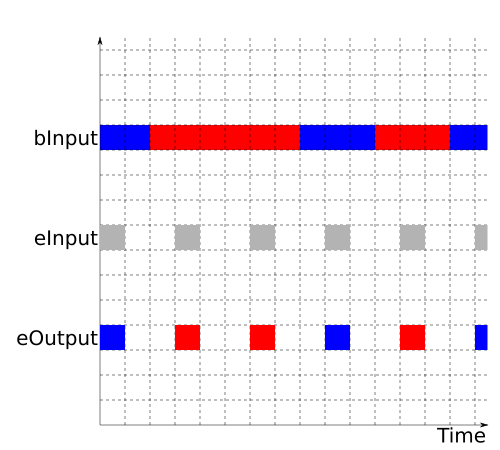
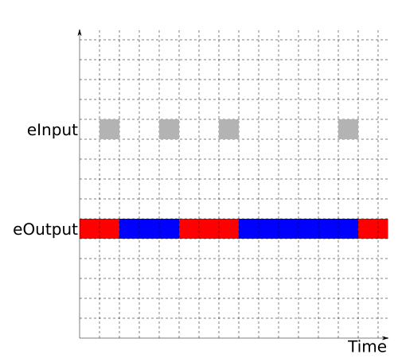
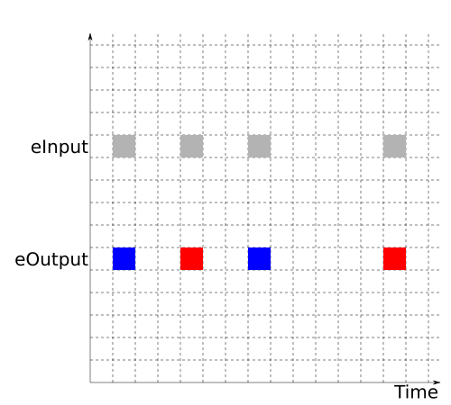

Previously we developed a simple command line program and refactored it to make parts of it more reusable and testable.
Behaviors
The next piece of the FRP puzzle is behaviors. Where events are only defined at particular points in time, behaviors are defined for all points of time.
The documentation mentions that the semantics of an Behavior a allows you to view it as being similar to Time -> a. In contrast to events, behaviors have values for every point in time.
This lets us use behaviors to model program state, since the program state is a value that changes over time. We can also pass them as arguments as something like a ‘live variable’ or a ‘first-class observer’. All in good time.
The type in reactive-banana is:
data Behavior aand it has a Functor instance and an Applicative instance.
instance Functor Behavior
instance Applicative BehaviorThe Applicative instance means that we can create a behavior that has a constant value across all times using pure, and we can stitch them together using <*>.
-- bInt and bString defined elsewhere
bBool :: Behavior Bool
bBool = pure True
bTriple :: Behavior (Int, String, Bool)
bTriple = (,,) <$> bInt <*> bString <*> bBoolThe more common (and more interesting) way to create a behavior is with stepper:
stepper :: MonadMoment m => a -> Event a -> m (Behavior a)
stepper x eNext = ...This will create a Behavior that starts with the value x, and then changes its to the value the event eNext every time that event occurs. This change will not be observable until the next logical clock tick after the event eNext.
|
 |
If we’re viewing this as state manipulation, then we should be able to use a State monad simile. Imagine that we’ve identified a handful of conditions that would cause us to use put at various times and with various values. We already have the tools to combine all of those calls to put into the eInput event - at which point we could use stepper to create a Behavior that models all of the changes to this particular piece of state over time.
We commonly build Behaviors using Events, and it turns out that we also sample Behaviors using Events. The Event is what give us the logical clock tick to use to sample the Behavior.
This is commonly done with some infix operators:
(<@>) :: Behavior (a -> b) -> Event a -> Event b
(<@) :: Behavior b -> Event a -> Event b These are analogues of <*> and <* from Applicative. Since behaviour has an Applicative instance, it means we can do things like:
f <$> bBehavior1 <*> bBehavior2 <@> eEventWithStuffTheFunctionNeedsor
f <$> bBehavior1 <*> bBehavior2 <@ eEventThatIsJustActingAsATriggerWe can demonstrate these pictorially.
Sometimes we want to involve the value of theEvent:
|
 |
|
 |
If we were squinting that the Event we used with stepper and imagining that it was the aggregation of all of our uses of put in the State monad, then we can view the Event we use with <@ as the aggregation of some uses of get.
The last major use of Behaviors is to filter Events, where the filter condition that changes over time:
whenE :: Behavior Bool -> Event a -> Event a
filterApply :: Behavior (a -> Bool) -> Event a -> Event aTrue is dark gray and False is light gray, we would have:
|
 |
What has this given us? It has given us a way to manage state inside an FRP system.
We have a lot of freedom here.
We can develop several Behaviors and combine them together with the Applicative typeclass. The Behaviors don’t need to know anything about each other - maybe they’re all change at the same points in time, maybe they’re changing at complete distinct points in time.
We can sample these Behaviors with any Events that we have, and again we don’t know and don’t care if the points in time the Events fire at correspond to the points in time where the Behavior is changing.
The independence and composability of the pieces are what makes FRP fun to work with.
An example
We’re going to model a user logging in and logging out of a website. The goal is track whether they are currently logged in or logged out.
We’ll start with a data type for the login state:
data LoginState =
LoggedIn
| LoggedOut
deriving (Eq, Ord, Show)and a pair of data types for the inputs and outputs of our component:
data LoginInputs = LoginInputs {
lieLogIn :: Event ()
, lieLogOut :: Event ()
}
data LoginOutputs :: LoginOutputs {
lobState :: Behavior LoginState
}From there we just need to use leftmost to combine the events and stepper to turn them into a behavior:
logInHandler :: MonadMoment m => LogInInputs -> m LoginOutputs
logInHandler (LogInEvents eLogIn eLogOut) = do
bState <- stepper LoggedOut . leftmost $ [
LoggedIn <$ eLogIn -- (1)
, LoggedOut <$ eLogOut -- (2)
]
return $ LoginOutputs bStateNotes:
- Change the state to
LoggedInwhen the user logs in. - Change the state to
LoggedOutwhen the user logs out.
All is well at this point.
If we want to add more meat to the problem, we can disallow logging in while already logged in or logging out while already logged out.
We add a data type for the kinds of errors we might see:
data LoginError =
AlreadyLoggedIn
| NotLoggedIn
deriving (Eq, Ord, Show)We also write some helper functions to work out whether we should change state or signal that an error has occurred:
logIn :: LogInState -> Either LoginError LoginState
logIn LoggedIn = Left AlreadyLoggedIn
logIn LoggedOut = Right LoggedIn
logOut :: LogInState -> Either LoginError LoginState
logOut LoggedOut = Left NotLoggedIn
logOut LoggedIn = Right LoggedOutWe add an event signaling that an error has occurred to our output:
data LoginOutputs :: LoginOutputs {
lobState :: Behavior LoginState
, loeError :: Event LoginError
}and we’re ready to begin.
I’m going to go slowly through this part.
We’re going to make use of an extension that gets used a bit in the FRP world:
{-# RecursiveDo #-}This allows us to use mdo instead of do to indicate that we want to use value recursion:
logInHandler :: LoginInputs -> Moment LoginOutputs
logInHandler (LoginInputs eLogIn eLogOut) = mdo
...
return $ LoginOutputs ??? ???We want to start the user as LoggedOut. It should be possible to use stepper to build our Behavior LoginState from that and some Event, which we’ll deal with later:
logInHandler :: LoginInputs -> Moment LoginOutputs
logInHandler (LoginInputs eLogIn eLogOut) = mdo
bState <- stepper LoggedOut ???
...
return $ LoginOutputs bState ???At this point we have one of our outputs.
Now we can sample bLoginState in order to bring our helper functions into play:
logInHandler :: LoginInputs -> Moment LoginOutputs
logInHandler (LoginInputs eLogIn eLogOut) = mdo
bState <- stepper LoggedOut ???
??? leftmost $ [
logIn <$> bState <@ eLogIn
, logOut <$> bState <@ eLogOut
]
return $ LoginOutputs bState ???which will give us an Event (Either LoginError LoginState).
That can be split into an event for the case where there was an error and an event for the case where we should change the state:
logInHandler :: LoginInputs -> Moment LoginOutputs
logInHandler (LoginInputs eLogIn eLogOut) = mdo
bState <- stepper LoggedOut ???
let (eLoginError, eLoginState) = split . leftmost $ [
logIn <$> bState <@ eLogIn
, logOut <$> bState <@ eLogOut
]
return $ LoginOutputs bState eLoginErrorwhich gives us our second output.
Now we make use of the value recursion, and use eLoginState as the event that drives the call to stepper:
logInHandler :: LoginInputs -> Moment LoginOutputs
logInHandler (LoginInputs eLogIn eLogOut) = mdo
bState <- stepper LoggedOut eLoginState
let
(eLoginError, eLoginState) = split . leftmost $ [
logIn <$> bState <@ eLogIn
, logOut <$> bState <@ eLogOut
]
return $ LoginOutputs bState eLoginErrorThis creates a loop in our event network, but everything will be well behaved if we only recursive refer to Behaviors via Events or to Events via Behaviors. The delays in the updates to Behaviors appear to be part of the reason that this works out so well.
Value recursion can take a little while to wrap your head around, but it’s very helpful for expressing interesting problems elegantly and concisely.
There are two variations on the above that are worth pointing out.
If we want to use MonadMoment, we also need to use a MonadFix constraint:
logInHandler :: (MonadMoment m, MonadFix m) => LoginInputs -> m LoginOutputsIf we want to limit the scope of the value recursion, we can use the rec keyword instead of mdo:
logInHandler :: LoginInputs -> Moment LoginOutputs
logInHandler (LoginInputs eLogIn eLogOut) = do
rec
bLogInState <- stepper LoggedOut eLogInState
let
(eLogInError, eLogInState) = split . leftmost $ [
logIn <$> bLogInState <@ eLogIn
, logOut <$> bLogInState <@ eLogOut
]
let
notInScopeOfTheRecursion = True
return $ LoginOutputs bLogInState eLogInErrorMessage history
(The code for this section is here)
Let’s use stepper, <@> and <@ to demonstrate what we can do with behaviors.
As a reminder, our previous take on message handling was pretty boring:
data MessageInput = MessageInput { mieRead :: Event String }
data MessageOutput = MessageOutput { moeWrite :: Event String }
handleMessage :: MonadMoment m => MessageInput -> m MessageOutput
handleMessage (MessageInput eMessage) = do
return $ MessageOutput eMessageThe last message
We’ll spice that up by printing the last message that was echoed:
-- see Part3.Example1
handleMessage :: MonadMoment m => MessageInput -> m MessageOutput
handleMessage (MessageInput eMessage) = do
bMessages <- stepper "" eMessage
let
format l m = m ++ " (last message: " ++ l ++ ")"
eOut = format <$> bMessages <@> eMessage
return $ MessageOutput eOutWe’re using stepper to keep the most recently seen message around so that we can sample it later on. The updates to stepper are being driven by eMessage, and won’t be seen until the next transaction. By using eMessage to sample bMessages we’re grabbing the value of bMessages at the moment before it gets updated by eMessage.
This is how we manage to use the behavior to get hold of the last message that we saw.
The length of the last message
We’ve already got the last message on the screen, so maybe displaying the length of the last message would be more interesting:
-- see Part3.Example2
handleMessage :: MonadMoment m => MessageInput -> m MessageOutput
handleMessage (MessageInput eMessage) = do
bMessages <- stepper "" eMessage
let
bLastLength = length <$> bMessages
format l m = m ++ " (last message length: " ++ show l ++ ")"
eOut = format <$> bLastLength <@> eMessage
return $ MessageOutput eOutIt also shows that I’m not lying about the Functor instance.
All of the previous messages
We use another function to do more interesting things with behaviors:
accumB :: MonadMoment m => a -> Event (a -> a) -> m (Behavior a)
accumB x eFunction = ...stepper and accumE:
|
 |
It is like accumE because it accumulates the composition of the functions inside the various occurrences of the event, and it is like stepper because the change isn’t observable until the next logical moment in time.
accumE and accumB side by side might help:
|
 |
|
As a reminder, both accumE and accumB work nicely with unions:
unions :: [Event (a -> a)] -> Event (a -> a)if we want to work with several events.
We can use this to accumulate all of the messages that we’ve seen:
-- see Part3.Example3
handleMessage :: MonadMoment m => MessageInput -> m MessageOutput
handleMessage (MessageInput eMessage) = do
bMessages <- accumB [] $
(\x xs -> x : xs) <$> eMessage
let
format ls m = m ++ " (previous messages: " ++ show ls ++ ")"
eOut = format <$> bMessages <@> eMessage
return $ MessageOutput eOutConditional events based on behaviors
We can filter events using the value of a behavior at the time of the event using whenE:
whenE :: Behavior Bool -> Event a -> Event a This gives us one (slightly contrived) option for not printing anything special when the history is empty:
-- see Part3.Example4
handleMessage :: MonadMoment m => MessageInput -> m MessageOutput
handleMessage (MessageInput eMessage) = do
bMessages <- accumB [] $
(\x xs -> x : xs) <$> eMessage
let
format ls m =
m ++
" (previous messages: " ++ show ls ++ ")"
bHasMessages = (not . null) <$> bMessages
eMessageWithHistory = whenE bHasMessages eMessage
eOut = leftmost [
format <$> bMessages <@> eMessageWithHistory
, eMessage
]
return $ MessageOutput eOutThis is a nice example of using leftmost as like a switch-case-default statement. All of the inputs to leftmost are based on eMessages, but we have made one of them conditional. If the condition is met then we get the conditional event, otherwise we get the default event that is the last element in the list.
Trimming the history
If we just want to print the last 3 messages that we’ve seen we can do that:
-- see Part3.Example5
handleMessage :: MonadMoment m => MessageInput -> m MessageOutput
handleMessage (MessageInput eMessage) = do
bMessages <- accumB [] $
(\x xs -> take 3 (x : xs)) <$> eMessage
let
format ls m = m ++ " (previous messages: " ++ show ls ++ ")"
bHasMessages = (not . null) <$> bMessages
eMessageWithHistory = whenE bHasMessages eMessage
eOut = leftmost [
format <$> bMessages <@> eMessageWithHistory
, eMessage
]
return $ MessageOutput eOutWe do the trimming inside of the accumulation so that we don’t have a Behavior with collecting a list with unbounded length floating around in our system.
Hard-coding the 3 in there should be making us feel a little ill.
Maybe we want the number of messages to be configurable, or we want to tie it to a modifiable setting. We can get some future proofing for that by passing in the number of messages that we want as a behavior.
Doing this is a common FRP idiom.
This is how it looks:
-- see Part3.Example6
data MessageInput = MessageInput {
mieRead :: Event String
, mibLimit :: Behavior Int
}
handleMessage :: MonadMoment m => MessageInput -> m MessageOutput
handleMessage (MessageInput eMessage bLimit) = do
bMessages <- accumB [] $
(\n x xs -> take n (x : xs)) <$> bLimit <@> eMessage
let
format ls m = m ++ " (previous messages: " ++ show ls ++ ")"
bHasMessages = (not . null) <$> bMessages
eMessageWithHistory = whenE bHasMessages eMessage
eOut = leftmost [
format <$> bMessages <@> eMessageWithHistory
, eMessage
]
return $ MessageOutput eOutIf we want to hard-code a limit of 3 for the time being, we can set it up with pure 3. Later on, we might add some code for admins to alter the limit - if that contributes to a behavior, and if our various components take their parameters as behaviors, then all we need to do is wire it up to our components.
A component for the history limit
In order to modify the limit as we go, we need to introduce a few more pieces.
Let’s assume that the limit on the history starts at 1, and is modified by two events: one increments the limit, the other decrements the limit unless it is already at 0.
We can build a behavior for the limit using accumB:
-- see Part3.Example7
data LimitInput = LimitInput {
lieLimitUp :: Event ()
, lieLimitDown :: Event ()
}
data LimitOutput = LimitOutput {
lobLimit :: Behavior Int
}
handleLimit :: MonadMoment m => LimitInput -> m LimitOutput
handleLimit (LimitInput eUp eDown) = do
bLimit <- accumB 1 . unions $ [
succ <$ eUp
, (max 0 . pred) <$ eDown
]
return $ LimitOutput bLimitIf we wanted to be a little fancier for no real good reason, we could use recursive values via the RecursiveDo language extension:
{-# LANGUAGE RecursiveDo #-}
handleLimit :: MonadMoment m => LimitInput -> m LimitOutput
handleLimit (LimitInput eUp eDown) = mdo
let
eDownNonNegative = whenE ((> 0) <$> bLimit) eDown
bLimit <- accumB 1 . unions $ [
succ <$ eUp
, pred <$ eDownNonNegative
]
return $ LimitOutput bLimitThe behavior gives us something like a step function, but we might end up wanting an event that triggers when the behavior changes.
We can do that with accumE:
eLimit <- accumE 1 . unions $ [
succ <$ eUp
, (max 0 . pred) <$ eDown
]If we wind up needing both, we can efficiently combine the two of these by using mapAccum:
mapAccum :: MonadMoment m => acc -> Event (acc -> (x, acc)) -> m (Event x, Behavior acc) This version uses mapAccum to do this:
data LimitInput = LimitInput {
lieLimitUp :: Event ()
, lieLimitDown :: Event ()
}
data LimitOutput = LimitOutput {
loeLimit :: Event Int
, lobLimit :: Behavior Int
}
handleLimit :: MonadMoment m => LimitInput -> m LimitOutput
handleLimit (LimitInput eUp eDown) = do
(eLimit, bLimit) <- mapAccum 1 . fmap (\f x -> (f x, f x)) . unions $ [
succ <$ eUp
, (max 0 . pred) <$ eDown
]
return $ LimitOutput eLimit bLimitHaving both a behavior and an event that triggers when the behavior changes can be handy, so you’ll see this idiom appear in a few of the reactive-banana examples floating around on the internet.
It’s useful in this example as well.
Let’s have a look at a sample interaction with our program:
> a
a
> b
b (previous messages: ["a"])
> c
c (previous messages: ["b"])
> /limitup
> d
d (previous messages: ["c"]) -- (1)
> e
e (previous messages: ["d","c"])
> f
f (previous messages: ["e","d"])
> /limitup
> g
g (previous messages: ["f","e"])
> h
h (previous messages: ["g","f","e"])
> i
i (previous messages: ["h","g","f"])
> /limitdown
> j
j (previous messages: ["i","h","g"]) -- (2)
> k
k (previous messages: ["j","i"])
> l
l (previous messages: ["k","j"])Notes:
- This is fine - we have raised the limit, but have fewer messages in history than the limit.
- This is less good - we have lowered the limit, another message has come through, and we’re still storing more than the current limit.
It’s not the end of the world, but we’d like to trim that history a little sooner.
In order to do that we’ll use the version of the ‘limit’ component that produces both an event and a behavior, and we’ll update our ‘message’ component to make use of it:
data MessageInput = MessageInput {
mieMessage :: Event String
, mieLimit :: Event Int
, mibLimit :: Behavior Int
}
data MessageOutput = MessageOutput {
moeWrite :: Event String
}
handleMessage :: MessageInput -> Moment MessageOutput
handleMessage (MessageInput eMessage eLimit bLimit) = do
bMessages <- accumB [] $ unions [
(\n x xs -> take n (x : xs)) <$> bLimit <@> eMessage
, take <$> eLimit -- (1)
]
let
format ls m = m ++ " (previous messages: " ++ show ls ++ ")"
bHasMessages = (not . null) <$> bMessages
eMessageWithHistory = whenE bHasMessages eMessage
eOut = leftmost [
format <$> bMessages <@> eMessageWithHistory
, eMessage
]
return $ MessageOutput eOutNotes:
- We trim the messages when we get an event indicating that the limit has changed.
Now that same interaction with the new program looks like this:
> a
a
> b
b (previous messages: ["a"])
> c
c (previous messages: ["b"])
> /limitup
> d
d (previous messages: ["c"])
> e
e (previous messages: ["d","c"])
> f
f (previous messages: ["e","d"])
> /limitup
> g
g (previous messages: ["f","e"])
> h
h (previous messages: ["g","f","e"])
> i
i (previous messages: ["h","g","f"])
> /limitdown
> j
j (previous messages: ["i","h"]) -- (1)
> k
k (previous messages: ["j","i"])
> l
l (previous messages: ["k","j"])Notes
- The message history has been trimmed in a timely fashion.
Testing with behaviors
This will be filled in once I have dealt with some rough edges.
Next up
Now that we have some idea of what we can do with behaviors, we’re going to start putting together some of the pieces we’ll end up using in our chat server.
We’ll begin by putting together all of the pieces that we can inside of a command line application, in order to introduce one or two more tricks.